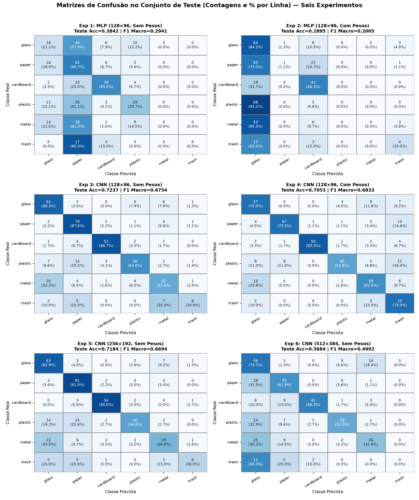
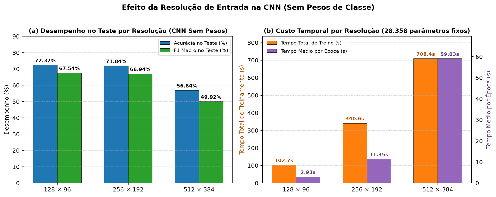

Figura 1 – Distribuição estratificada das seis classes do TrashNet (70% treino, 15% validação, 15% teste)

Fonte: Elaborada pelos autores (2026).
RESUMO: A triagem automatizada de resíduos sólidos recicláveis é um desafio relevante de visão computacional devido à variabilidade visual dos materiais e ao desequilíbrio entre categorias. Este trabalho apresenta um estudo experimental controlado com o conjunto de dados TrashNet (2.527 imagens em seis classes: glass, paper, cardboard, plastic, metal e trash), utilizando divisão estratificada fixa (70% treinamento, 15% validação e 15% teste; semente 42). Foram executados seis experimentos obrigatórios comparando Multilayer Perceptron (MLP) e Rede Neural Convolucional (CNN) com e sem pesos de classe em 128 × 96 pixels, além da avaliação do efeito da resolução na CNN (128 × 96, 256 × 192 e 512 × 384) mantendo 28.358 parâmetros via Global Average Pooling. Como extensão opcional, aplicou-se transferência de aprendizagem com YOLO11n-cls (224 × 224). Nos experimentos obrigatórios, a CNN em 128 × 96 sem pesos obteve o maior F1 macro de validação (0,7229) e 72,37% de acurácia no teste (F1 macro 0,6754), superando amplamente a MLP (38,42% e 0,2941, com 9,47 milhões de parâmetros). Os pesos de classe elevaram o recall da classe minoritária trash de 0,30 para 0,75 na CNN (F1 macro 0,6833), à custa de menor precisão. O aumento de resolução para 512 × 384 elevou o custo temporal em 20 vezes por época sem ganhos de desempenho (56,84%). Por fim, o YOLO11n-cls atingiu 93,16% de acurácia e 0,9198 de F1 macro no mesmo conjunto de teste, evidenciando o impacto do pré-treinamento em larga escala.
Palavras-chave: Redes Neurais Artificiais. Visão Computacional. TrashNet. Classificação de Resíduos. Transferência de Aprendizagem.
O gerenciamento eficiente de resíduos sólidos urbanos depende diretamente da correta segregação dos materiais recicláveis. No entanto, a triagem manual está sujeita a erros humanos, fadiga e riscos ocupacionais. Nesse contexto, técnicas de aprendizado profundo (Deep Learning) e Redes Neurais Artificiais (RNAs) aplicadas à visão computacional oferecem uma alternativa promissora para identificar automaticamente materiais como vidro, papel, papelão, plástico e metal a partir de imagens digitais (GOODFELLOW et al., 2016).
Conforme os fundamentos teóricos das RNAs, arquiteturas do tipo Multilayer Perceptron (MLP) empregam camadas totalmente conectadas e propagação feedforward com funções de ativação suaves e diferenciáveis para aprender mapeamentos não lineares por meio do algoritmo de retropropagação do erro (backpropagation), superando as limitações de separabilidade linear do Perceptron Simples e do ADALINE (RUMELHART; HINTON; WILLIAMS, 1986; HAYKIN, 2001; SILVA; SPATTI; FLAUZINO, 2010). Contudo, ao vetorizar imagens RGB diretamente na entrada, a topologia MLP perde a relação geométrica de vizinhança espacial e sofre explosão paramétrica na primeira camada. Em contrapartida, no paradigma de Deep Learning, as Redes Neurais Convolucionais (CNNs) preservam a entrada matricial e realizam extração e seleção de características embutidas por meio de filtros compartilhados e subamostragem (pooling), aprendendo mapas hierárquicos de bordas, cantos, contornos e partes de objetos (ZEILER; FERGUS, 2014; GOODFELLOW et al., 2016).
O objetivo deste estudo é investigar empiricamente o desempenho e o custo computacional de modelos MLP e CNN na classificação das seis classes do conjunto de dados TrashNet (YANG; THUNG, 2016). Especificamente, avaliam-se: (i) a diferença arquitetural entre MLP e CNN em 128 × 96 pixels; (ii) o efeito da ponderação de classes na função de perda sobre a classe minoritária trash; (iii) o custo-benefício do aumento de resolução espacial (128 × 96, 256 × 192 e 512 × 384) na CNN; e (iv) como objetivo extra opcional, os ganhos obtidos por transferência de aprendizagem com a arquitetura YOLO11n-cls.
Utilizou-se exclusivamente o arquivo oficial dataset-resized.zip do TrashNet, composto por 2.527 imagens coloridas no formato RGB com dimensão padrão de 512 × 384 pixels (largura × altura), distribuídas em seis classes: glass (501), paper (594), cardboard (403), plastic (482), metal (410) e trash (137). A inspeção automatizada de integridade confirmou zero arquivos corrompidos e 100% das amostras no modo RGB. Entretanto, a verificação por assinatura criptográfica (MD5) revelou três pares de arquivos idênticos rotulados em categorias distintas: plastic152.jpg/glass176.jpg, plastic332.jpg/glass389.jpg e metal91.jpg/glass115.jpg. Optou-se por manter o conjunto íntegro para preservar a comparabilidade com a literatura, documentando tal ruído de rotulagem como fator limitante.
Visualmente, as fotografias do TrashNet foram capturadas em ambiente controlado sobre fundo claro uniforme, com iluminação variável e objetos individuais frequentemente amassados, translúcidos (vidro e plástico) ou com reflexos metálicos (metal e vidro), o que dificulta a discriminação apenas por cor global. A Figura 1 exibe a distribuição estratificada e a Figura 2 apresenta exemplos representativos das seis classes.

Para garantir reprodutibilidade e impedir vazamento de dados (data leakage), aplicou-se divisão estratificada fixa com semente 42 em todos os experimentos: 1.768 imagens (70%) para treinamento, 379 (15%) para validação e 380 (15%) para teste, mantendo em todos os subconjuntos a proporção original de ~5,42% da classe trash (96, 21 e 20 imagens, respectivamente). As imagens foram convertidas para RGB, redimensionadas por interpolação bilinear a partir da referência 512 × 384 para 128 × 96 e 256 × 192 (Figura 3) e normalizadas para o intervalo [0, 1] mediante divisão por 255. Para referência estatística exclusiva do treinamento, registraram-se médias RGB de [0,6727; 0,6396; 0,6045] e desvios padrão de [0,1836; 0,1826; 0,1933]. O aumento de dados leve (espelhamento horizontal com p = 0,5 e vertical com p = 0,25) foi aplicado exclusivamente durante o treinamento das CNNs.
metal107.jpg nas três resoluções experimentais (L × A)
Distinguindo arquitetura (fluxo macroscópico do sinal) de topologia (hiperparâmetros internos definidos pelo projetista), todos os modelos obrigatórios foram implementados em PyTorch e treinados do zero em modo offline por mini-lotes (batch size = 32) com semente fixa (42), otimizador Adam (taxa de aprendizagem inicial lr = 10−3, decaimento de pesos 10−4, escalonador ReduceLROnPlateau com fator 0,5 e paciência 3), função de perda Entropia Cruzada (CrossEntropyLoss) e ativação ReLU (g(u) = max(0, u)) nas camadas intermediárias — escolhida para eliminar operações exponenciais e mitigar o desvanecimento do gradiente nas caudas de saturação das sigmoidais. Adotou-se Parada Antecipada (Early Stopping) com contador de paciência (8 épocas em 128 × 96, 7 em 256 × 192 e 6 em 512 × 384) monitorando o F1 macro de validação, restaurando os pesos da melhor época antes da avaliação única no teste.
AdaptiveAvgPool2d(1)); e (2) Decisão — vetorização (Flatten) seguida de MLP densa (64 neurônios ReLU + Dropout 0,20 + 6 saídas), mantendo exatamente 28.358 parâmetros nas três resoluções.Objetivo Extra (YOLO11n-cls): Aplicou-se transferência de aprendizagem com o modelo yolo11n-cls.pt (Ultralytics 8.4.216, pré-treinado no ImageNet-1K, 1.538.790 parâmetros) no modo classify, preservando exatamente os mesmos diretórios de treino, validação e teste da semente 42. O ajuste fino ocorreu em 224 × 224 pixels por 20 épocas com otimizador AdamW (lr0 = 0,001, lote 32) e aumentação padrão do YOLO classify apenas no treino.
Hardware e Medição de Custo: Todos os treinamentos foram executados em CPU Intel Core i7-4850HQ @ 2,30 GHz (16 GB de RAM, macOS 11.7). Não havia GPU CUDA disponível; portanto, registrou-se o pico de memória RAM (RSS) via biblioteca psutil e cronometrou-se exclusivamente o laço de treinamento e validação por época via time.perf_counter(), excluindo download e pré-carregamento.
A Tabela 1 consolida as métricas de desempenho (validação e teste) e o custo computacional dos seis experimentos obrigatórios e do experimento bônus com YOLO11n-cls. A Tabela 2 detalha precisão, recall, F1 e suporte por classe no conjunto de teste (380 amostras), utilizando zero_division=0 quando uma classe não recebe nenhuma predição.
| Experimento | Res. (L×A) | Pesos | Parâmetros | Tam. (MB) | Épocas (Melhor/Tot) | Tempo Tot. (s) | Tempo/Ép. (s) | Pico RAM (MB) | Val F1 Macro | Teste Acc | Teste F1 Macro |
|---|---|---|---|---|---|---|---|---|---|---|---|
| Exp 1: MLP | 128×96 | Não | 9.471.110 | 36,13 | 12 / 20 | 62,04 | 3,10 | 1.012,6 | 0,3330 | 38,42% | 0,2941 |
| Exp 2: MLP | 128×96 | Sim | 9.471.110 | 36,13 | 6 / 14 | 43,40 | 3,10 | 1.012,8 | 0,1987 | 28,95% | 0,2005 |
| Exp 3: CNN (Melhor Val) | 128×96 | Não | 28.358 | 0,12 | 35 / 35 | 102,70 | 2,93 | 895,8 | 0,7229 | 72,37% | 0,6754 |
| Exp 4: CNN | 128×96 | Sim | 28.358 | 0,12 | 33 / 35 | 101,11 | 2,89 | 729,6 | 0,7187 | 70,53% | 0,6833 |
| Exp 5: CNN | 256×192 | Não | 28.358 | 0,12 | 26 / 30 | 340,62 | 11,35 | 2.188,7 | 0,6641 | 71,84% | 0,6694 |
| Exp 6: CNN | 512×384 | Não | 28.358 | 0,12 | 6 / 12 | 708,35 | 59,03 | 6.601,8 | 0,5723 | 56,84% | 0,4992 |
| Exp 7 (Bônus): YOLO11n-cls | 224×224 | Pré-treinado | 1.538.790 | 3,05 | 20 / 20 | 2.404,90 | 120,25 | 474,5 | 0,9208* | 93,16% | 0,9198 |
zero_division=0)| Experimento | glass (sup=76) P / R / F1 |
paper (sup=89) P / R / F1 |
cardboard (sup=60) P / R / F1 |
plastic (sup=73) P / R / F1 |
metal (sup=62) P / R / F1 |
trash (sup=20) P / R / F1 |
|---|---|---|---|---|---|---|
| Exp 1: MLP (128×96) | 0,27 / 0,21 / 0,24 | 0,30 / 0,70 / 0,42 | 0,67 / 0,65 / 0,66 | 0,51 / 0,40 / 0,45 | 0,00 / 0,00 / 0,00 | 0,00 / 0,00 / 0,00 |
| Exp 2: MLP (128×96, Pesos) | 0,23 / 0,84 / 0,36 | 0,50 / 0,01 / 0,02 | 0,48 / 0,68 / 0,57 | 0,00 / 0,00 / 0,00 | 0,00 / 0,00 / 0,00 | 0,36 / 0,20 / 0,26 |
| Exp 3: CNN (128×96) | 0,66 / 0,80 / 0,72 | 0,73 / 0,88 / 0,80 | 0,90 / 0,87 / 0,88 | 0,78 / 0,63 / 0,70 | 0,60 / 0,52 / 0,56 | 0,60 / 0,30 / 0,40 |
| Exp 4: CNN (128×96, Pesos) | 0,64 / 0,75 / 0,69 | 0,88 / 0,75 / 0,81 | 0,98 / 0,83 / 0,90 | 0,87 / 0,55 / 0,67 | 0,64 / 0,63 / 0,63 | 0,26 / 0,75 / 0,39 |
| Exp 5: CNN (256×192) | 0,59 / 0,83 / 0,69 | 0,72 / 0,91 / 0,80 | 0,89 / 0,90 / 0,89 | 0,87 / 0,55 / 0,67 | 0,66 / 0,47 / 0,55 | 0,67 / 0,30 / 0,41 |
| Exp 6: CNN (512×384) | 0,37 / 0,74 / 0,49 | 0,64 / 0,62 / 0,63 | 0,91 / 0,68 / 0,78 | 0,75 / 0,52 / 0,61 | 0,57 / 0,42 / 0,48 | 0,00 / 0,00 / 0,00 |
| Exp 7: YOLO11n-cls (Bônus) | 0,89 / 0,96 / 0,92 | 0,96 / 0,96 / 0,96 | 0,98 / 0,97 / 0,97 | 0,94 / 0,86 / 0,90 | 0,94 / 0,94 / 0,94 | 0,81 / 0,85 / 0,83 |
As curvas de perda e acurácia por época dos seis experimentos obrigatórios são exibidas na Figura 4, evidenciando a estabilidade de convergência das CNNs em 128 × 96 e 256 × 192 frente à estagnação precoce das MLPs e às oscilações de validação da CNN em 512 × 384. Na Figura 5, apresentam-se as matrizes de confusão no conjunto de teste com contagens absolutas e porcentagens por linha na ordem canônica das classes.


A Figura 6 ilustra o efeito do aumento de resolução na CNN sem pesos de classe (Experimentos 3, 5 e 6), contrapondo acurácia/F1 macro de teste ao tempo médio por época e ao tempo total de treinamento. Na Figura 7, realiza-se a análise qualitativa dos erros do modelo obrigatório de maior F1 macro na validação (Exp 3: CNN 128 × 96 sem pesos, Val F1 Macro = 0,7229), exibindo seis amostras classificadas incorretamente dentre os 105 erros no teste (275 acertos em 380 imagens).


Por fim, a Figura 8 apresenta as curvas de perda e acurácia na validação e a matriz de confusão no mesmo conjunto de teste para o objetivo extra com YOLO11n-cls, que alcançou 93,16% de acurácia global (apenas 26 erros em 380 amostras) e 0,9198 de F1 macro.

A comparação controlada em 128 × 96 pixels demonstra a superioridade estrutural das CNNs sobre as MLPs em tarefas visuais. A MLP (Exp 1) possui 9.471.110 parâmetros (36,13 MB), pois conecta cada um dos 36.864 valores RGB da imagem achatada a todos os neurônios ocultos, perdendo a topologia bidimensional. Como consequência, a MLP estagnou rapidamente (Early Stopping na época 20, melhor época 12), obtendo 38,42% de acurácia e 0,2941 de F1 macro no teste, com colapso completo (F1 = 0,00 via zero_division=0) em metal e trash, pois a rede passou a favorecer classes majoritárias de fundo uniforme como paper (recall 0,70) e cardboard (0,65).
Em contraste, a CNN (Exp 3) utilizou apenas 28.358 parâmetros (334 vezes menor e 0,12 MB em disco) graças ao compartilhamento de filtros convolucionais e ao Global Average Pooling, alcançando 72,37% de acurácia e 0,6754 de F1 macro no teste. As curvas da Figura 4 mostram que, enquanto a MLP apresenta estagnação após a época 12 com grande lacuna em relação à capacidade de discriminação, a CNN mantém queda consistente da perda de treino e validação até a época 35, sem sinais severos de sobreajuste (overfitting), validando a eficácia da regularização combinada por BatchNorm, Dropout e aumento de dados geométrico.
A introdução de pesos inversamente proporcionais à frequência (com destaque para wtrash = 3,0694 frente a wpaper = 0,7083) produziu efeitos opostos nas duas arquiteturas. Na MLP (Exp 2), a amplificação do gradiente para a classe minoritária desestabilizou o espaço de alta dimensão não estruturado: o recall de trash subiu de 0,00 para 0,20, mas as classes plastic e metal zeraram completamente (zero_division=0) e a acurácia global caiu para 28,95% (F1 macro 0,2005).
Na CNN (Exp 4), porém, a ponderação cumpriu seu papel com clareza: o recall de trash saltou de 0,30 (Exp 3) para 0,75 (15 de 20 amostras identificadas corretamente), elevando também o F1 de metal (0,56 → 0,63) e o F1 macro global de teste (0,6754 → 0,6833). Em contrapartida, a penalização severa de erros em trash gerou falsos positivos nessa categoria, reduzindo a precisão de trash de 0,60 para 0,26 e a acurácia global de 72,37% para 70,53%. Trata-se do clássico compromisso (trade-off) entre sensibilidade e precisão em classes raras.
Graças ao Global Average Pooling, o número de parâmetros manteve-se idêntico (28.358) nas resoluções 128 × 96, 256 × 192 e 512 × 384. Entretanto, o custo computacional cresceu drasticamente: o tempo médio por época subiu de 2,93 s (128 × 96) para 11,35 s (256 × 192, ~3,9×) e 59,03 s (512 × 384, ~20,1×), enquanto o pico de RAM saltou de 895,8 MB para 2.188,7 MB e 6.601,8 MB (6,6 GB). Em termos de desempenho, 256 × 192 empatou estatisticamente com 128 × 96 (71,84% vs. 72,37% de acurácia), mas 512 × 384 sofreu queda acentuada para 56,84% de acurácia, F1 macro 0,4992 e recall nulo em trash (Early Stopping na época 12, melhor época 6).
Esse comportamento explica-se pelo campo receptivo efetivo: mantendo fixos os três blocos convolucionais e filtros 3×3, uma imagem quatro vezes maior em cada eixo faz com que cada núcleo observe uma fração 16 vezes menor da área do objeto, capturando texturas locais finas ou ruídos de fundo em detrimento da forma global. Portanto, imagens maiores não compensaram o aumento de tempo e memória nesta arquitetura controlada. Ademais, confirma-se a assimetria prática do Deep Learning: embora o treinamento em 512 × 384 seja custoso em CPU, após fixados os pesos sinápticos a inferência no conjunto de teste ocorre em milissegundos com arquivo de apenas 0,12 MB.
Na análise de erros do Exp 3 (Figura 7) e nas matrizes de confusão (Figura 5), as maiores confusões ocorreram entre glass, plastic e metal (ex.: metal376.jpg previsto como glass com 84,5% e glass27.jpg previsto como metal com 83,5%) devido a transparência, brilho especular e reflexos metálicos semelhantes; e entre paper, cardboard e plastic (ex.: plastic364.jpg previsto como paper com 93,1% e cardboard277.jpg como paper com 81,8%) por tonalidades claras e dobras semelhantes. Embora o dataset seja útil para experimentação controlada, suas limitações — fundo branco homogêneo, ausência de múltiplos objetos sobrepostos, iluminação de estúdio e presença dos três pares de imagens duplicadas com rótulos conflitantes — restringem a generalização direta para esteiras industriais ou fotografias reais ao ar livre.
Na comparação com o estudo original de Yang e Thung (2016), que relataram 63% de acurácia com SVM em seis classes e 22% com CNN em cinco classes (excluindo trash por desequilíbrio), e com a continuação posterior documentada no README do repositório TrashNet (~75% com CNN), nossos resultados da CNN em 128 × 96 (72,37%) situam-se em patamar próximo ao da continuação do repositório e muito acima da CNN inicial do artigo. Ressalta-se, contudo, que os números não são diretamente equiparáveis como o mesmo experimento, pois diferem na inclusão permanente de trash, na divisão estratificada fixa (70/15/15 vs. 70/13/17), na resolução de entrada e na adoção de BatchNorm e Global Average Pooling.
Ao comparar a melhor CNN obrigatória na validação (Exp 3: 72,37% Acc; 0,6754 F1 macro) com o modelo YOLO11n-cls (Exp 7: 93,16% Acc; 0,9198 F1 macro), observa-se um salto de +20,79 pontos percentuais em acurácia e +0,2444 em F1 macro, com F1 de 0,8293 na classe minoritária trash (17 de 20 acertos) e redução dos erros no teste de 105 para apenas 26. Esse ganho reflete diretamente o princípio de Transfer Learning e Fine-Tuning: (i) a 1ª região pré-treinada na base ImageNet-1K já fornece extratores universais de bordas, contornos e reflexos (YOSINSKI et al., 2014); (ii) a arquitetura moderna com blocos C3k2 (1,54M parâmetros) possui maior capacidade representacional; e (iii) a resolução 224 × 224 aliada à aumentação automática (RandAugment) amplia a generalização. Embora o ajuste fino tenha exigido 2.404,9 s (~40 min) em CPU, a inferência manteve-se leve (~14,4 ms/imagem).
Este estudo comprovou empiricamente que, para classificação de imagens de resíduos no TrashNet, as CNNs superam amplamente as MLPs com menos de 0,3% da quantidade de parâmetros, que a ponderação de classes é eficaz para elevar a sensibilidade da classe minoritária trash em CNNs (recall de 0,30 para 0,75), e que o aumento de resolução para 512 × 384 sem aprofundamento arquitetural degrada a generalização enquanto multiplica por 20 o custo temporal por época. Por fim, o experimento extra com YOLO11n-cls demonstrou que a transferência de aprendizagem é o caminho mais efetivo para bases pequenas e desbalanceadas, alcançando 93,16% de acurácia. Como trabalhos futuros, sugerem-se a remoção ou revisão dos pares duplicados conflitantes, busca sistemática de hiperparâmetros e validação em cenários reais com fundos complexos.
BARBOSA, Paulo Cirillo Souza. Redes Neurais Artificiais: Percursos de Aprendizagem 1 a 4. Fortaleza: Universidade de Fortaleza (EAD Unifor), 2025.
BISHOP, Christopher M.; NASRABADI, Nasser M. Pattern recognition and machine learning. New York: Springer, 2006.
GOODFELLOW, Ian; BENGIO, Yoshua; COURVILLE, Aaron. Deep learning. Cambridge: MIT Press, 2016.
HAYKIN, Simon. Redes neurais: princípios e prática. 2. ed. Porto Alegre: Bookman, 2001.
JOCHER, Glenn; CHAURASIA, Ayush; QIU, Jing. Ultralytics YOLO11: Classification documentation. 2024. Disponível em: https://docs.ultralytics.com/tasks/classify/. Acesso em: 22 nov. 2026.
PASZKE, Adam et al. PyTorch: An imperative style, high-performance deep learning library. In: Advances in Neural Information Processing Systems (NeurIPS), v. 32, 2019.
RUMELHART, David E.; HINTON, Geoffrey E.; WILLIAMS, Ronald J. Learning representations by back-propagating errors. Nature, v. 323, p. 533-536, 1986.
SILVA, Ivan Nunes da; SPATTI, Danilo Hernane; FLAUZINO, Rogério Andrade. Redes neurais artificiais para engenharia e ciências aplicadas. São Paulo: Artliber, 2010.
YANG, Mindy; THUNG, Gary. Classification of trash for recyclability status. Stanford University: CS229 Project Report, 2016. Repositório e dataset disponíveis em: https://github.com/garythung/trashnet. Acesso em: 22 nov. 2026.
YOSINSKI, Jason et al. How transferable are features in deep neural networks? In: Advances in Neural Information Processing Systems (NeurIPS), v. 27, 2014.
ZEILER, Matthew D.; FERGUS, Rob. Visualizing and understanding convolutional networks. In: Computer Vision – ECCV 2014. Cham: Springer, 2014. p. 818-833.